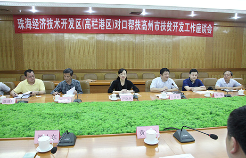

持续用力推进精准扶贫不断巩固提升脱贫攻坚成果

一是深入推进产业扶贫。持续加大产业扶贫投入，按照不低于去年投入20%的增幅，结合省市分配资金，共投入220多万元，重点打造坊安街道肖家村果蔬生态大棚、黄旗堡街道西红柿大棚项目等5个产业扶贫示范点，力争8月底建成达效，确保稳定脱贫不返贫。
二是广泛凝聚工作合力。强化行业部门责任，聚合社会扶贫资源，对去年脱贫退出的8个省定贫困村继续派驻第一书记，并整合农业、开发、民政等行业部门涉农资金67万元用于精准扶贫。广泛开展慈心一日捐、落实助学资金、青年志愿服务、脱贫培训等社会扶贫行动，今年以来累计筹集资金40.5万元。